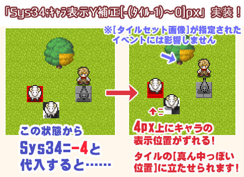
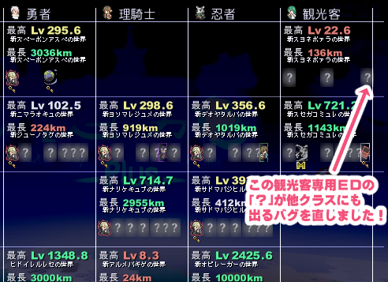
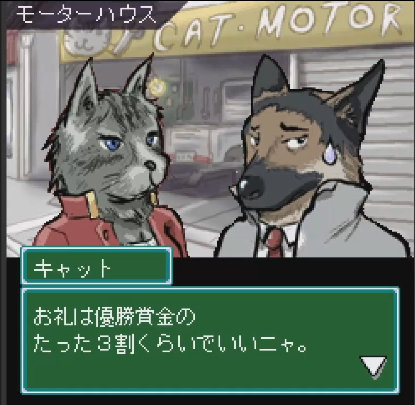
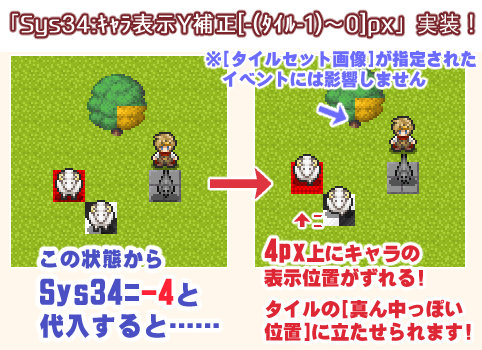
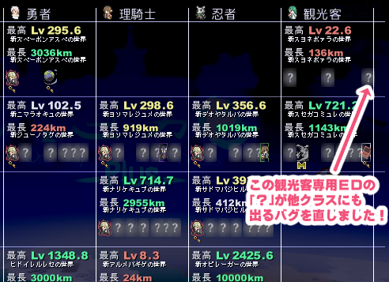
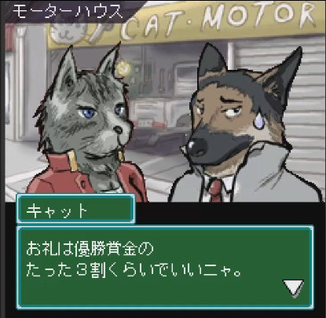

■2025-09-06 (土) ウディタ新機能2つ！(Y表示補正/MoveWatch)＆ 片道勇者プラス修正！▼
ということでウディコンが終わって平穏になりましたが色々やることがあってリアルも少しドタバタしております！
引き続きのウディタの修正や、ご報告された片道勇者プラスのバグ修正などを行っております！
指定した数pxだけキャラを上に表示させられます！

→ 通常、全てのマップイベントや主人公、仲間のキャラクターチップは「タイルの一番下」を基準とした位置に立っていますが、このSys34にマイナスの値を入れると、そのpx分だけ【全キャラの「表示Y座標」が補正されて表示】されます。
つまり、これからはすべてのキャラ画像を修正しなくても「タイルの中央付近にキャラを立たせる」ことが簡単にできます！
→ 設定可能な範囲は「-(タイルサイズ-1）～0」までの範囲で、マイナスにしたピクセル分だけ全キャラが上に移動します。
（たとえばタイルサイズ「16」なら「-15～0」の範囲まで指定可能です。もし値がはみ出していた場合は範囲内におさめられます）
→ 画像として「タイルセット」が設定されている場合はY座標は変化しません。
（マップに重ねようとしても重ならなくなってしまうからです）
→ また裏技として、イベント名に「<Y=FIXED>」（全て半角大文字）という文字を含めると、「タイルセット」画像を設定した場合と同じく、Sys34によるY座標の補正が効かなくなります。
あるイベントや主人公に「動作指定」が行われたタイミングを監視し、デバッグウィンドウで検出することができます。
→ たとえばデバッグ文で「MoveWatch:ON=-2」(-2:主人公)のように記入すると……ゲーム中に主人公に対して「動作指定」コマンドが実行されたとき、デバッグウィンドウに以下のように表示されます！
MoveWatch=> ID -2 [ 9 moves ]
-->[MapEv4/4行]
※「9 moves」はその動作指定で指定されている（移動・方向転換・変数操作などの）コマンドが9つあるという意味です
※MoveWatch:OFF=? でその対象への監視を切ることができます。
これを使えば、動作指定がどこで上書きされているかを調査するのもラクになります！
たとえば
「『並列実行』内の処理のどこかで主人公の動作指定が上書きされてるっぽいけど、どこかわからーん！」
というときでも探すのが容易に！ これを使えるほどの方はぜひご利用ください！

コンプリートしたい方には永遠に消えない謎の「？」が出てスッキリしない部分になってしまっていたと思いますが、これからは出なくなります！
こちらも早い内にやっておきたかったことの一つ！

『シェパード捜査録』は私が依頼を請けて作ったミニ作品なのですが、見る手段がなくなっていたので、せめてプレイ動画にして保存しようというお話です！
合成音声で声入れして、ラジオ感覚で楽しめるようにしようと編集し始めています。
あと一週間もあれば一通りできそうな雰囲気なので、この作業だけで今後一生残せると考えれば、その手間をそそぐ価値はあるはずです！
特に、私がいなくなってサイトが消滅した後でも「ゲーム内からDL可能なユーザーデータ」を遊べるようにすることを考えると、ユーザーデータを同梱するか、GitHubに置いたバックアップからDLできるようにするかしないといけないと思いますので、何か対応を考え中です。
あと、10年経って直したくなった顔グラフィックなどの画像の修正などもやりたいですね！ もう少しかわいく＆かっこよくできそうだと思ったものに関しては！
そして、たぶんDLsiteさんのほうが目に付きやすいと思いますので、もし追加で売れればいくらか開発資金を得る材料にもなると思います！
というのも、ウディタ関連収益って時給150円以下にしかならず、お金が減る一方というヤバいプロジェクトなんですが、2024年8月末から1年間もずっとウディタの修正をしてしまって収支があまりにキツいんですよ！ バグ対応だけで半年以上続いたのが想定外！（2025年1月に3.5ベータを内部公開して220日くらいで146回更新！））
そんな中、いつもご支援くださっているみなさまにはいつも本当に助けられています！ ありがとうございます！
という感じで、ウディタのバグ頻度もようやく下がってきて、ウディコンも終わったおかげで、これまでたまった汚れや、やっておきたかったことをこなせる余裕ができるようになってきました！
これらを早々に片付けて、本番『片道勇者2』行きたいです！！
といいますか、もうこの辺りから徐々に『片道勇者2』の開発リハビリも始めて脳内回路を構成していきたいですね。
ウディタ3.5になってかなり作りやすくなったので、開発効率もぐーんと上がっているはずです！
ようやくウディタ周りから魂がかえってきて、自分の創造性を使っていい時間が戻ってきたと感じます！ 本当に1年ぶりくらいに自由を得られた感じです！
ここからも、進めるべきことをやれる全力のペースかつ最大限の工夫をしながら進めていきますよー！ うおおおー！！
引き続きのウディタの修正や、ご報告された片道勇者プラスのバグ修正などを行っております！
◆ウディタの新機能2つ搭載！
【キャラ表示Y位置を補正できるシステム変数を搭載！】
キャラを従来より自然に「タイルの中央」に表示することができるシステム変数「Sys34:ｷｬﾗ表示Y補正[-(ﾀｲﾙ-1)～0]px」を新たに実装しました！指定した数pxだけキャラを上に表示させられます！

→ 通常、全てのマップイベントや主人公、仲間のキャラクターチップは「タイルの一番下」を基準とした位置に立っていますが、このSys34にマイナスの値を入れると、そのpx分だけ【全キャラの「表示Y座標」が補正されて表示】されます。
つまり、これからはすべてのキャラ画像を修正しなくても「タイルの中央付近にキャラを立たせる」ことが簡単にできます！
→ 設定可能な範囲は「-(タイルサイズ-1）～0」までの範囲で、マイナスにしたピクセル分だけ全キャラが上に移動します。
（たとえばタイルサイズ「16」なら「-15～0」の範囲まで指定可能です。もし値がはみ出していた場合は範囲内におさめられます）
→ 画像として「タイルセット」が設定されている場合はY座標は変化しません。
（マップに重ねようとしても重ならなくなってしまうからです）
→ また裏技として、イベント名に「<Y=FIXED>」（全て半角大文字）という文字を含めると、「タイルセット」画像を設定した場合と同じく、Sys34によるY座標の補正が効かなくなります。
【デバッグ文の新機能 MoveWatch】
一部の人には待望！ 「動作指定」を検知できるデバッグ処理、「MoveWatch:ON=(イベントID)」機能を追加しました！あるイベントや主人公に「動作指定」が行われたタイミングを監視し、デバッグウィンドウで検出することができます。
→ たとえばデバッグ文で「MoveWatch:ON=-2」(-2:主人公)のように記入すると……ゲーム中に主人公に対して「動作指定」コマンドが実行されたとき、デバッグウィンドウに以下のように表示されます！
MoveWatch=> ID -2 [ 9 moves ]
-->[MapEv4/4行]
※「9 moves」はその動作指定で指定されている（移動・方向転換・変数操作などの）コマンドが9つあるという意味です
※MoveWatch:OFF=? でその対象への監視を切ることができます。
これを使えば、動作指定がどこで上書きされているかを調査するのもラクになります！
たとえば
「『並列実行』内の処理のどこかで主人公の動作指定が上書きされてるっぽいけど、どこかわからーん！」
というときでも探すのが容易に！ これを使えるほどの方はぜひご利用ください！
◆『片道勇者プラス』のバグ修正
クラス内データ一覧のバグを修正！
「クラス内データ一覧」にて、「観光客ED」の「？」が観光客以外のクラスにも出ているバグを修正しました！
コンプリートしたい方には永遠に消えない謎の「？」が出てスッキリしない部分になってしまっていたと思いますが、これからは出なくなります！
◆目標：『シェパード捜査録』のプレイ動画作成中！
ここからは今後の予定！ FOMA携帯用アプリだった『シェパード捜査録』をプレイ動画にしています！こちらも早い内にやっておきたかったことの一つ！

『シェパード捜査録』は私が依頼を請けて作ったミニ作品なのですが、見る手段がなくなっていたので、せめてプレイ動画にして保存しようというお話です！
合成音声で声入れして、ラジオ感覚で楽しめるようにしようと編集し始めています。
あと一週間もあれば一通りできそうな雰囲気なので、この作業だけで今後一生残せると考えれば、その手間をそそぐ価値はあるはずです！
◆目標：『シルフェイド学院物語』のDLsite版を作りたい！
アルバートやシル見の教頭やウリユと同居して学校生活を送れるゲーム、『シルフェイド学院物語』ですが、ちょっとリファインしてDLsite版を出したいなあと考えております！特に、私がいなくなってサイトが消滅した後でも「ゲーム内からDL可能なユーザーデータ」を遊べるようにすることを考えると、ユーザーデータを同梱するか、GitHubに置いたバックアップからDLできるようにするかしないといけないと思いますので、何か対応を考え中です。
あと、10年経って直したくなった顔グラフィックなどの画像の修正などもやりたいですね！ もう少しかわいく＆かっこよくできそうだと思ったものに関しては！
そして、たぶんDLsiteさんのほうが目に付きやすいと思いますので、もし追加で売れればいくらか開発資金を得る材料にもなると思います！
というのも、ウディタ関連収益って時給150円以下にしかならず、お金が減る一方というヤバいプロジェクトなんですが、2024年8月末から1年間もずっとウディタの修正をしてしまって収支があまりにキツいんですよ！ バグ対応だけで半年以上続いたのが想定外！（2025年1月に3.5ベータを内部公開して220日くらいで146回更新！））
そんな中、いつもご支援くださっているみなさまにはいつも本当に助けられています！ ありがとうございます！
という感じで、ウディタのバグ頻度もようやく下がってきて、ウディコンも終わったおかげで、これまでたまった汚れや、やっておきたかったことをこなせる余裕ができるようになってきました！
これらを早々に片付けて、本番『片道勇者2』行きたいです！！
といいますか、もうこの辺りから徐々に『片道勇者2』の開発リハビリも始めて脳内回路を構成していきたいですね。
ウディタ3.5になってかなり作りやすくなったので、開発効率もぐーんと上がっているはずです！
ようやくウディタ周りから魂がかえってきて、自分の創造性を使っていい時間が戻ってきたと感じます！ 本当に1年ぶりくらいに自由を得られた感じです！
ここからも、進めるべきことをやれる全力のペースかつ最大限の工夫をしながら進めていきますよー！ うおおおー！！